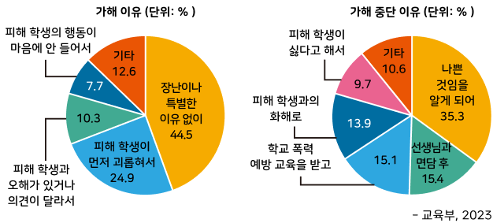

자료 읽기학교 폭력, 그 원인

교육부는 학교 폭력 예방 및 대응 대책 마련을 위해서 초등학교 4학년부터 고등학교 2학년까지 재학생 약 15만명 을 대상으로
‘학교 폭력 실태 조사’ 를 실시하였다.
이에 가해 학생들이 밝힌 폭력을 저지른 까닭은 ‘장난이나 특별한 이유 없이’(44.5%), ‘피해 학생이 먼저 괴롭혀서’(24.9%),
‘피해 학생과 오해가 있거나 의견이 달라서’(10.3%), ‘피해 학생의 행동이 마음에 안 들어서’(7.7%) 등의 순으로 나타났다.
반면 학교 폭력을 중단한 까닭은 ‘폭력이 나쁜 행동임을 알게 되어서’(35.3%), ‘선생님과 면담 후’(15.4%),
‘학교 폭력 예방 교육을 받은 후’(15.1%), ‘피해 학생과 화해하고 친해져서’(13.9%) 등의 순으로 나타났다.
- 교육부, 2023